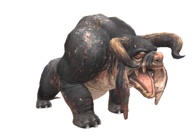
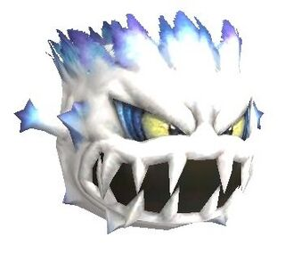
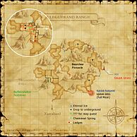

Description
Uleguerand Range is an outdoor area in Valdeaunia.
Map

Involved in Quests / Missions
| Quest / Mission | Type | Starter | Location |
|---|---|---|---|
| Bombs Away! | General | Buffalostalker Dodzbraz | Uleguerand Range (F-9) |
| Catch It If You Can! | General | Ohruru | Port Windurst (E-7) |
| Over the Hills and Far Away | Map | Antreneau | Port San d'Oria (G-7) |
NPCs
| Name | Location | Type |
|---|---|---|
| Zebada | pos=F-12 | ENM Quest Activator |
| Buffalostalker Dodzbraz | pos=F-9 | Quest NPC |
Notorious Monsters
| Name | Level | Drops | Steal | Family | Spawns | Notes |
|---|---|---|---|---|---|---|
| Black Coney | 70-72 | Selene's Bow | — |  RabbitsImage source RabbitsImage source | — | A, S, Sc |
| Bonnacon | 69 | Buffalo Hide Buffalo Meat Cure Clogs Tredecim Scythe | — |  BuffaloImage source | — | A, S |
| Father Frost | 74-75 | Purgatory Collar Snoll Arm | — |  SnollsImage source | — | A, S, M |
| Geush Urvan | — | Buffalo Hide Buffalo Horn Buffalo Meat Toreador's Cape | — | BuffaloImage source | — | A, S |
| Jormungand | 95 | Dragon Blood Dragon Meat Dragon Talon Molybdenum Ore Damascene Cloth Divine Log Oxblood Mercurial Pole Wyrm Horn Behemoth Hide | — |  WyrmsImage source WyrmsImage source | — | Respawn: 3-5 days; A, T(S), T(H) |
| Mountain Worm (NM) | 73 | Heavy Gauntlets Zincite | — |  WormsImage source WormsImage source | — | L, H |
| Snow Maiden | 71-72 | Purgatory Collar Snoll Arm | — | SnollsImage source | — | A, S, M |
| White Coney | 70-72 | Selene's Bow | — | RabbitsImage source | — | A, S, Sc |
Regular Monsters


Story walkthroughs in this area
| Story | Mission / quest |
|---|---|
| CoP 5-3U | Where Messengers Gather — Ulmia’s Path |
| CoP 8-4 | Dawn |
References
External references describe their own server or retail rules. Documented Zenith changes take precedence.
Map credits: Map 1 — HorizonXI Wiki. Original game maps © SQUARE ENIX; redrawn maps retain the credited authorship and license.

Additional level-75 reference


|
This mountainous region is the highest area above sea level on the Quon continent. An Orc-created pass over the range exists, but the steep climb, combined with the snowstorms that blow in from every angle of the convoluted landscape, provide a daunting challenge to intruders. In a time when the Orcs had little skill in navigating the seas, their army reached the northern cliffs by skirting a succession of islands, then marched over the Uleguerand Range to stage their incursions into Xarcabard. In an attempt to stem the tide of beastmen, the outnumbered knights of San d'Oria often clashed with the Orcish forces upon the mountain range itself. Thousandfall Ridge, mentioned in the histories of Warking Ashfarg, was famous as a site for the fiercest battles. Even now, there are daredevil explorers who test their luck by sliding down its sheer slopes. |
Connecting Areas
- Xarcabard at (F-12)
- Bearclaw Pinnacle at (G-8, H-6, I-7, J-7)
If you see a quest that is listed as Yes but is not working properly please report it on GitHub. Make sure to list as many details as possible when describing what is not working. If there happens to already be a report on that quest regarding your problem, just add your experience to that report.
Legend
Yes = Quest is in game and working
Yes but bugged = Quest is in game but not working properly and being worked on or in que to be worked on.
No = Not in game yet but is planned
Involved in Quests/Missions
|
Quest |
Type |
Starter |
Location |
Available? |
| Bombs Away! | General | Buffalostalker Dodzbraz | Uleguerand Range (F-9) | No |
| Over the Hills and Far Away | Map | Antreneau | Port San d'Oria (G-7) | Yes |
| Mission | Country | Starter | Location | |
| Promathia Mission 8-4:Dawn | Promathia | --- | --- |
NPCs Found Here
|
Weather
| |||||||||||||||||
Notorious Monsters Found Here
|
Name |
Level |
Drops |
Steal |
Family |
Spawns |
Notes | |||||||
| Black Coney | 70 - 72 | Rabbit | |||||||||||
| Bonnacon | 69 - 69 | Buffalo | 1 | ||||||||||
| Father Frost | 74 - 75 | Snoll | 1 | ||||||||||
| Geush Urvan | Unknown | Buffalo | 1 | ||||||||||
| Jormungand | 95 - 95 | Wyrm | 1
Respawn: 3-8 days |
||||||||||
| Mountain Worm | 73 - 73 | Worm | 1 | ||||||||||
| Snow Maiden | 71 - 72 | Snoll | |||||||||||
| White Coney | 70 - 72 | Rabbit | 1 | ||||||||||
|
HP = Detects Low HP; M = Detects Magic; Sc = Follows by Scent; T(S) = True-sight; T(H) = True-hearing JA = Detects job abilities; WS = Detects weaponskills; Z(D) = Asleep in Daytime; Z(N) = Asleep at Nighttime | |||||||||||||
Mobs Found Here
|
Name |
Level |
Drops |
Steal |
Family |
Spawns |
Notes | |||||||
| Agloolik | 77 - 80 | Snoll | |||||||||||
| Akselloak | 71 - 74 | Snoll | |||||||||||
| Brontotaur | 68 - 71 | Taurus | |||||||||||
| Buffalo | 62 - 65 | Buffalo | 10 |
A, S | |||||||||
| Cwn Annwn | 59 - 64 | Hound | Nighttime | ||||||||||
| Demon's Elemental | Unknown | Elemental | |||||||||||
| Doom Mage | 73 - 76 | Skeleton | BLM | ||||||||||
| Doom Soldier | 66 - 70 | Skeleton | WAR | ||||||||||
| Dread Demon | 73 - 76 | Demon | |||||||||||
| Esbat | 59 - 61 | Giant Bat | |||||||||||
| Fachan | 73 - 75 | Ahriman | |||||||||||
| Giant Buffalo | 68 - 71 | Buffalo | |||||||||||
| Glacier Eater | 58 - 62 | Worm | |||||||||||
| Gore Demon | 73 - 76 | Demon | |||||||||||
| Ice Elemental | 66 - 68 | Elemental | |||||||||||
| Judicator Demon | 73 - 76 | Demon | |||||||||||
| Kindred Black Mage | 81 - 84 | Demon | |||||||||||
| Kindred Dark Knight | 81 - 84 | Demon | |||||||||||
| Kindred Summoner | 81 - 84 | Demon | |||||||||||
| Kindred Warrior | 81 - 84 | Demon | |||||||||||
| King Buffalo | 79 - 82 | Buffalo | |||||||||||
| Mindgazer | 69 - 72 | Hecteyes | |||||||||||
| Molech | 79 - 82 | Taurus | |||||||||||
| Morozko | 67 - 70 | Snoll | |||||||||||
| Mountain Worm | 66 - 70 | Worm | |||||||||||
| Nightmare Bats | 69 - 72 | Bat Trio | |||||||||||
| Nival Raptor | 68 - 70 | Raptor | A, H, Sc | ||||||||||
| Phasma | 67 - 72 | Ghost | |||||||||||
| Polar Hare | 65 - 68 | Rabbit | |||||||||||
| Smolenkos | 80 - 82 | Ahriman | |||||||||||
| Snoll | 60 - 63 | Snoll |
15 |
A, S, M | |||||||||
| Srei Ap | 71 - 76 | Ghost | |||||||||||
| Stygian Demon | 73 - 76 | Demon | |||||||||||
| Succubus Bats | 65 - 68 | Bat Trio | |||||||||||
| Tyrannotaur | 72 - 75 | Taurus | |||||||||||
| Uleguerand Tiger | 61 - 64 | Tiger |
26 |
A, L, S, Sc | |||||||||
| Variable Hare | 58 - 61 | Rabbit |
70 |
Sc | |||||||||
|
HP = Detects Low HP; M = Detects Magic; Sc = Follows by Scent; T(S) = True-sight; T(H) = True-hearing JA = Detects job abilities; WS = Detects weaponskills; Z(D) = Asleep in Daytime; Z(N) = Asleep at Nighttime | |||||||||||||
Adapted from Eden Wiki: Uleguerand Range · Contributors and history · CC BY-SA 4.0. Revision 45812. Layout, links and optional background text adapted for Zenith.